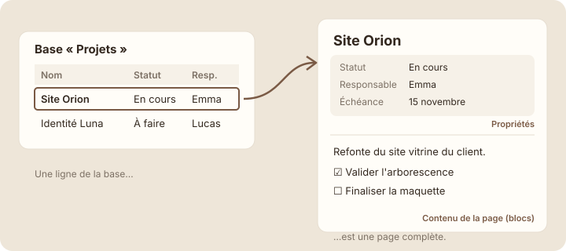
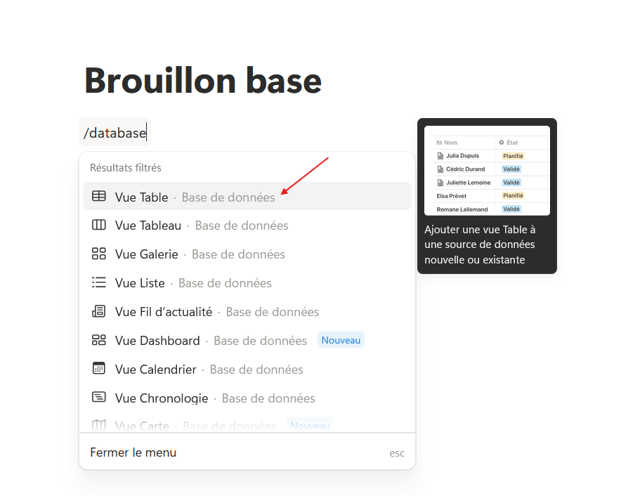
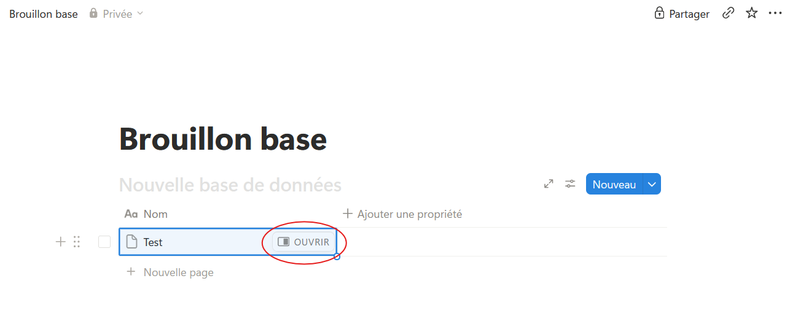

Une entrée est une page
Étape 1 : comprendre
Voici l'idée la plus importante du module, celle qui rend Notion différent d'un tableur : chaque ligne d'une base de données est une page.
Dans un tableau Excel, une ligne n'est qu'une suite de cases. Dans Notion, quand tu ouvres une ligne, tu découvres une page complète, avec deux parties :
- en haut, les propriétés : les informations des colonnes (statut, responsable, échéance…), présentées comme une fiche ;
- en dessous, le contenu : une page normale, où tu ajoutes des blocs comme au module 2 (texte, checklist, encadré, sous-page…).
Pense à un classeur de fiches cartonnées : sur la tranche, tu lis le nom et la date ; quand tu sors la fiche, tu as toute la place pour écrire. Dans Notion, on appelle chaque ligne une entrée de la base.
Pour ouvrir une entrée, survole son nom et clique sur « Ouvrir » (Open), ou clique simplement sur son nom. Selon les réglages, elle s'ouvre sur le côté de l'écran (aperçu latéral) ou en plein écran.

Une entrée de base de données est une page : ses propriétés forment les colonnes, et son contenu se remplit de blocs.
Attention : supprimer une ligne de la base supprime toute la page et son contenu. Comme pour une page, elle part dans la Corbeille et reste récupérable quelque temps.
Ouvrir un projet de Studio Nova
Voici la future base « Projets » de Studio Nova. Clique sur le nom d'un projet pour l'ouvrir : tu découvres ses propriétés, puis le contenu de sa page.
Dans la page « Site Orion », Emma a écrit un résumé et une checklist. Ce contenu n'apparaît pas dans le tableau : le tableau ne montre que les propriétés. C'est ce qui garde la base lisible, même avec beaucoup de détails dans chaque projet.
Ta première ligne-page
Avant de créer la vraie base « Projets » (leçon 4.5), fais un essai dans une page de brouillon.
- Crée une page « Brouillon base » dans « Pages privées ».
- Dans la page, tape « /database » et choisis « Vue Table » (Base de données). Attention, ne choisis pas « Vue Tableau » : malgré son nom, c'est un board, avec des cartes rangées en colonnes. Une petite base apparaît, avec une colonne « Nom ».

- Si Notion te demande une source de données, choisis « Nouvelle base de données » (New database).
- Clique dans la première case de « Nom » et écris « Test ».
- Survole « Test » : un bouton « Ouvrir » apparaît. Clique dessus.

- La page « Test » s'ouvre. Sous les propriétés, clique sur la zone vide et écris une phrase, puis ajoute une checklist avec « /todo ».
- Ferme la page : dans le tableau, seule la ligne « Test » est visible. Ton texte est rangé dans la page.
Astuce : dans une entrée ouverte sur le côté, l'icône en haut à gauche permet de l'ouvrir en pleine page. Pratique pour écrire un long compte rendu.
Exercice · dans Notion
Une ligne, une page
- Dans « Brouillon base », ajoute deux lignes : « Test » et « Test 2 ».
- Ouvre « Test 2 » et écris-y trois tâches en checklist.
- Supprime ensuite la page « Brouillon base » : tu n'en auras plus besoin.
Résultat attendu : en ouvrant « Test 2 », tu retrouves tes trois tâches sous les propriétés. Dans le tableau, elles n'apparaissent pas : chaque ligne garde son contenu dans sa propre page.
Étape 3 : vérifier
Objectif de la leçon
Tu sais maintenant qu'une ligne de base de données est une page complète, et tu sais l'ouvrir pour y écrire.
Choisis une réponse avant de valider.
Chaque ligne est une page : les remarques détaillées vont dans son contenu. Les colonnes restent réservées aux informations courtes qu'on veut voir, trier ou filtrer.
Choisis une réponse avant de valider.
En haut de l'entrée, Notion affiche ses propriétés comme une fiche ; le contenu libre vient en dessous.